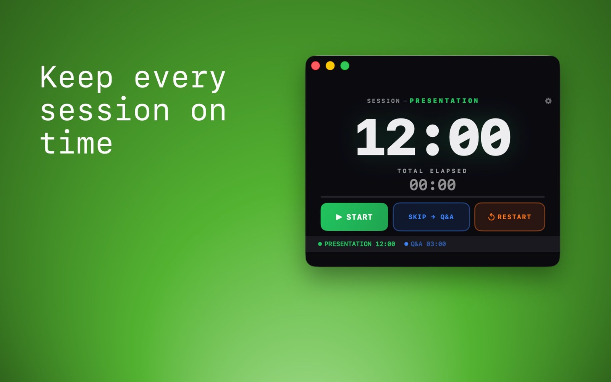
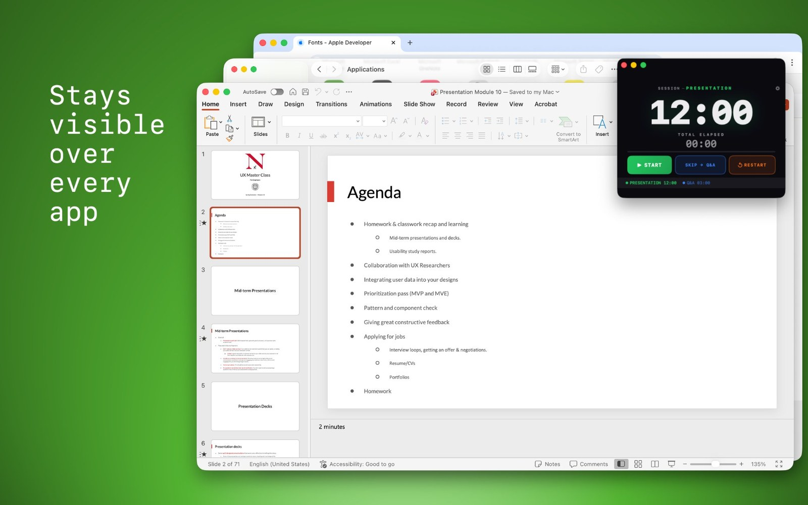
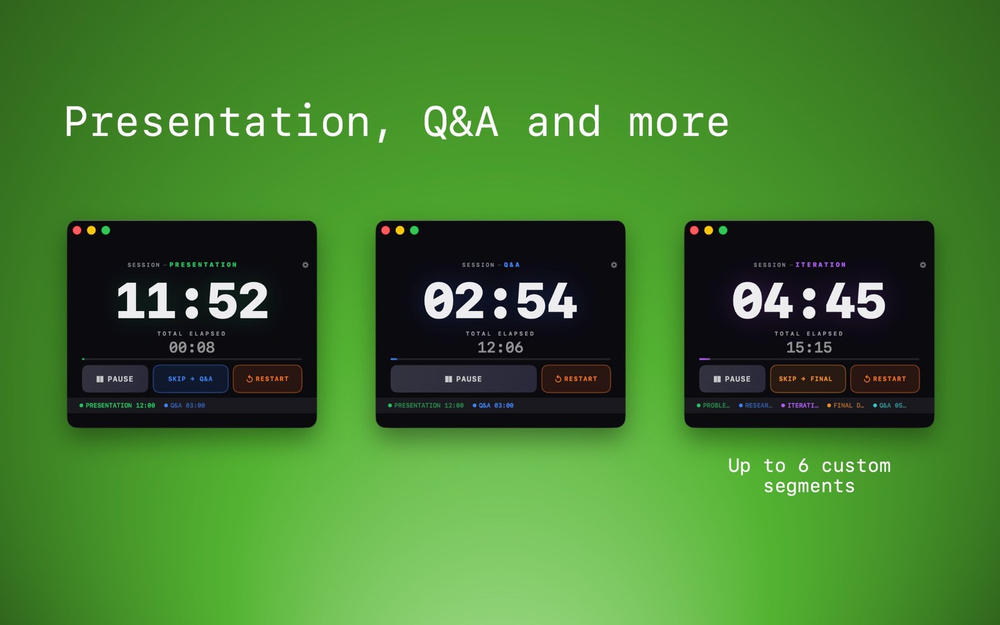
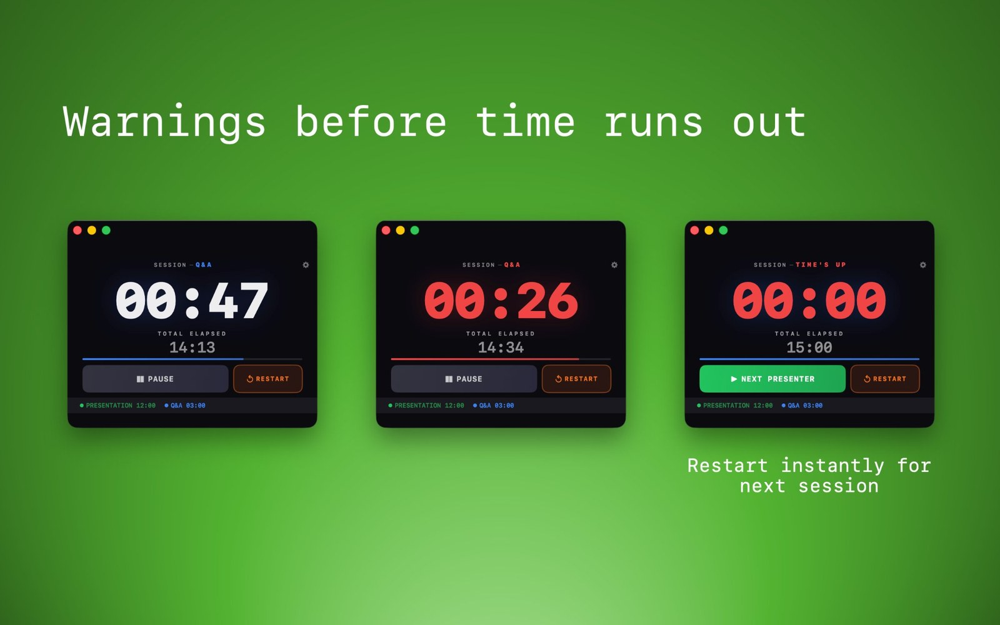
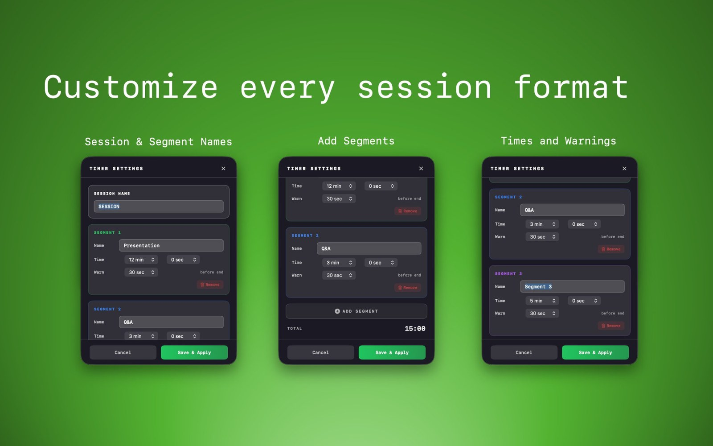

Keep every presentation on time.
Session Flow Timer is a focused timer for Mac that stays visible above your windows and across Spaces, so you can manage presentations, critiques, classes and Q&A without losing track of time. It's built for teaching, portfolio reviews, design critiques, workshops and conference sessions.
Available on the Mac App Store ↗
Running a class, a critique or a conference session means keeping time while you present, listen and moderate. A timer hidden behind slides or a video call is easy to lose track of, sessions drift, and the last presenters or the Q&A get squeezed.
Session Flow Timer keeps timing simple: create named segments, monitor elapsed time, jump to the next section, and see clear visual warnings when time is nearly up. It helps keep things fair across presenters, takes timing off the facilitator's mind, keeps Q&A and transitions visible, and prevents drift in longer sessions.
The timer stays above slides, browser windows, Zoom and other apps, and across Spaces, so you always know where you are while you teach, present or facilitate.

A session is rarely one block of time. Build sessions with up to six custom segments, like Presentation, Q&A, Critique or Iteration, each with its own timer, and skip straight to the next one when you're ready.

Strong color changes make it obvious when time is running low, so you can wrap up gracefully. When time is up, a Next Presenter button restarts the session instantly.

Name your sessions and segments, set durations and configure warning timing, all from a clean settings panel.

Session Flow Timer runs locally on your Mac. It doesn't require an account and doesn't collect personal data for tracking or advertising. Timer settings such as segment names, durations and warnings stay on your device.